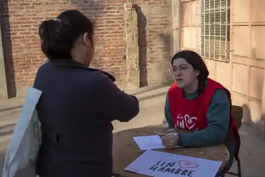
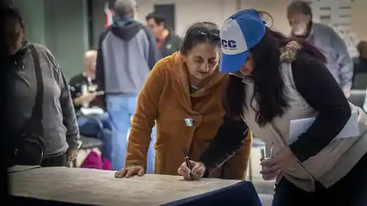
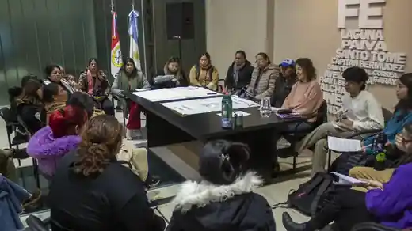

Organización
Construimos poder desde los barrios, las escuelas, los clubes, los comedores y los espacios comunitarios.
Fuerza Común · Santa Fe
Somos un espacio político y social de Santa Fe que construye comunidad y organiza respuestas colectivas frente a la desigualdad.
Construimos poder desde los barrios, las escuelas, los clubes, los comedores y los espacios comunitarios.
Creemos que nadie se salva solo. La solidaridad y el trabajo colectivo son una forma de hacer política todos los días.
Pensamos una ciudad que pueda decidir su rumbo y construir respuestas comunes a sus problemas.
Impulsamos una Santa Fe más justa, con vivienda, trabajo, ambiente sano, cultura y deporte para todos.
Tierra, vivienda e integración sociourbana como derechos.
↗ 02Defensa del Paraná, los humedales y los bienes comunes frente al saqueo.
↗ 03Políticas de igualdad, diversidad y reconocimiento del trabajo de cuidados.
↗ 04Espacios culturales, medios y producción colectiva de sentido.
↗ 05Clubes, playones y deporte comunitario como herramientas de inclusión y organización.
↗ 06Economía popular, cooperativas, pymes y empleo digno.
↗
Santa Fe Sin Hambre03 / Proyecto destacado
Santa Fe Sin Hambre releva comedores, copas de leche y merenderos junto a organizaciones comunitarias para construir información, visibilizar la situación alimentaria y fortalecer las redes que sostienen cada barrio.
Construimos un mapa de la emergencia alimentaria junto a organizaciones comunitarias de toda la ciudad.
Leer más →
Llevamos propuestas sobre hábitat, integración sociourbana, ambiente y participación para ampliar derechos.
Leer más →
Nos encontramos en barrios, clubes, universidades y organizaciones para construir respuestas colectivas.
Leer más →La política se construye donde transcurre la vida cotidiana. El mapa territorial va a reunir espacios, proyectos, actividades y presencia en los barrios de Santa Fe.
Ver territorio06 / Participá
Cuando esa fuerza se encuentra y se organiza, se vuelve Fuerza Común.
Quiero sumarme